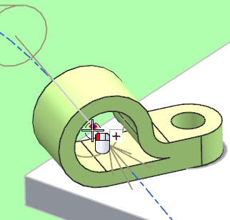

Right-click the path going through the clamp and choose Subdivide Segment.
In the Type group, make sure At Point is selected.
In the Subdivision Point group, from the Location list, select Through Point.
Make sure Specify Point is highlighted.
Select the midpoint of the line on which the port lays. You may need to use the QuickPick dialog box to select it.

点击确定。